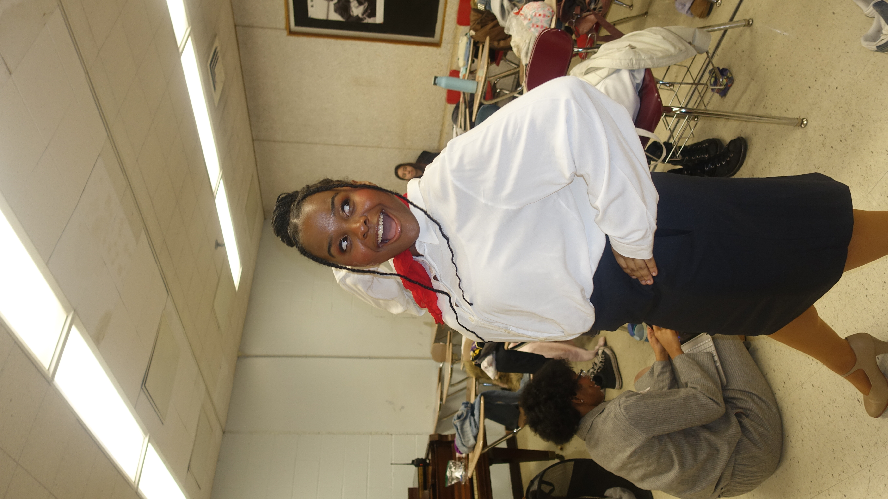
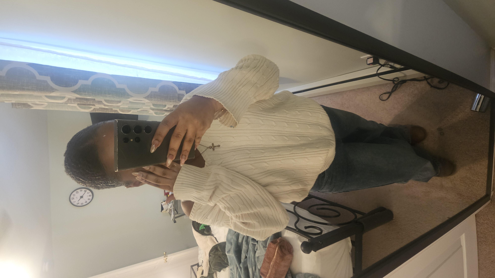

Hi, my name is Kaylee. I am 16 years old and will be turning 17 in October. I attend LaGuardia High School and enjoy expressing myself through creativity. I love singing, writing, and doing makeup because they allow me to showcase my personality and talents. In my free time, I enjoy watching TV shows, especially Dallas Cowboys Cheerleaders, along with a few other favorites. I am passionate about the things I love and always enjoy exploring new ways to be creative and have fun.
I have been singing for as long as I can remember, and music has always been an important part of my life. Throughout my school years, I have actively pursued opportunities to perform, participating in multiple gigs and events each year. These experiences have helped me develop not only my vocal abilities but also my confidence, stage presence, and ability to connect with diverse audiences. Balancing performances with my academic responsibilities has strengthened my time-management skills and commitment to my passion for music. Each performance has contributed to my growth as a singer and reinforced my dedication to continuing my musical journey.
